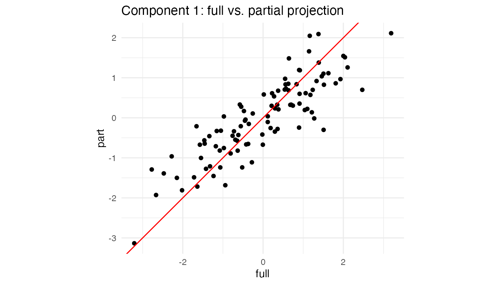
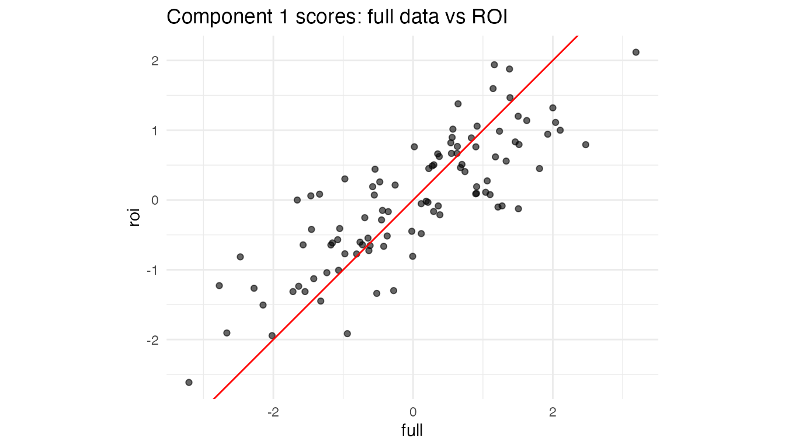

Partial projection: working with incomplete feature sets
Partial_Projection.Rmd1. Why partial projection?
Assume you trained a dimensionality-reduction model (PCA, PLS …) on p variables but, at prediction time,
- one sensor is broken,
- a block of variables is too expensive to measure,
- you need a quick first pass while the “heavy” data arrive later.
You still want the latent scores in the same component space, so downstream models, dashboards, alarms, … keep running.
That’s exactly what
partial_project(model, new_data_subset, colind = which.columns)does:
new_data_subset (n × q) ─► project into latent space (n
× k)
with q ≤ p. If the loading vectors are orthonormal this is a simple dot product; otherwise a ridge-regularised least-squares solve is used.
2. Walk-through with a toy PCA
set.seed(1)
n <- 100
p <- 8
X <- matrix(rnorm(n * p), n, p)
# Fit a centred 3-component PCA (via SVD)
# Manually center the data and create fitted preprocessor
Xc <- scale(X, center = TRUE, scale = FALSE)
svd_res <- svd(Xc, nu = 0, nv = 3)
# Create a fitted centering preprocessor
preproc_fitted <- fit(center(), X)
pca <- bi_projector(
v = svd_res$v,
s = Xc %*% svd_res$v,
sdev = svd_res$d[1:3] / sqrt(n-1), # Correct scaling for sdev
preproc = preproc_fitted
)2.2 Missing two variables ➜ partial projection
Suppose columns 7 and 8 are unavailable for a new batch.
X_miss <- X[, 1:6] # keep only first 6 columns
col_subset <- 1:6 # their positions in the **original** X
scores_part <- partial_project(pca, X_miss, colind = col_subset)
# How close are the results?
plot_df <- tibble(
full = scores_full[,1],
part = scores_part[,1]
)
ggplot(plot_df, aes(full, part)) +
geom_point() +
geom_abline(col = "red") +
coord_equal() +
labs(title = "Component 1: full vs. partial projection") +
theme_minimal()
Even with two variables missing, the ridge LS step recovers latent scores that lie almost on the 1:1 line.
3. Caching the operation with a partial projector
If you expect many rows with the same subset of features, create a specialised projector once and reuse it:
# Assuming partial_projector is available
pca_1to6 <- partial_projector(pca, 1:6) # keeps a reference + cache
# project 1000 new observations that only have the first 6 vars
new_batch <- matrix(rnorm(1000 * 6), 1000, 6)
scores_fast <- project(pca_1to6, new_batch)
dim(scores_fast) # 1000 × 3
#> [1] 1000 3Internally, partial_projector() stores the mapping
v[1:6, ] and a pre-computed inverse, so calls to
project() are as cheap as a matrix multiplication.
4. Block-wise convenience
For multiblock fits (created with
multiblock_projector()), project_block()
provides a convenient wrapper around partial_project():
# Create a multiblock projector from our PCA
# Suppose columns 1-4 are "Block A" (block 1) and columns 5-8 are "Block B" (block 2)
block_indices <- list(1:4, 5:8)
mb <- multiblock_projector(
v = pca$v,
preproc = pca$preproc,
block_indices = block_indices
)
# Now we can project using only Block 2's data (columns 5-8)
X_block2 <- X[, 5:8]
scores_block2 <- project_block(mb, X_block2, block = 2)
# Compare to full projection
head(round(cbind(full = scores_full[,1], block2 = scores_block2[,1]), 2))
#> full block2
#> [1,] -0.02 -0.36
#> [2,] -2.77 -2.92
#> [3,] 0.57 -0.05
#> [4,] -0.36 0.06
#> [5,] 0.91 1.08
#> [6,] 1.81 1.60This is equivalent to calling
partial_project(mb, X_block2, colind = 5:8) but reads more
naturally when working with block structures.
5. Not only “missing data”: regions-of-interest & nested designs
Partial projection is handy even when all measurements exist:
- Region of interest (ROI). In neuro-imaging you might have 50,000 voxels but care only about the motor cortex. Projecting just those columns shows how a participant scores within that anatomical region without refitting the whole PCA/PLS.
-
Nested / multi-subject studies. For multi-block PCA
(e.g. “participant × sensor”), you can ask “where would subject i lie if
I looked at block B only?” Simply supply that block to
project_block(). - Feature probes or “what-if” analysis. Engineers often ask “What is the latent position if I vary only temperature and hold everything else blank?” Pass a matrix that contains the chosen variables and zeros elsewhere.
5.1 Mini-demo: projecting an ROI
Assume columns 1–5 (instead of 50 for brevity) of X form
our ROI.
roi_cols <- 1:5 # pretend these are the ROI voxels
X_roi <- X[, roi_cols] # same matrix from Section 2
roi_scores <- partial_project(pca, X_roi, colind = roi_cols)
# Compare component 1 from full vs ROI
df_roi <- tibble(
full = scores_full[,1],
roi = roi_scores[,1]
)
ggplot(df_roi, aes(full, roi)) +
geom_point(alpha = .6) +
geom_abline(col = "red") +
coord_equal() +
labs(title = "Component 1 scores: full data vs ROI") +
theme_minimal()
Interpretation: If the two sets of scores align tightly, the ROI variables are driving this component. A strong deviation would reveal that other variables dominate the global pattern.
5.2 Single-subject positioning in a multiblock design
Using the multiblock projector from Section 4, we can see how individual observations score when viewed through just one block:
# Get scores for observation 1 using only Block 1 variables (columns 1-4)
subject1_block1 <- project_block(mb, X[1, 1:4, drop = FALSE], block = 1)
# Get scores for the same observation using only Block 2 variables (columns 5-8)
subject1_block2 <- project_block(mb, X[1, 5:8, drop = FALSE], block = 2)
# Compare: do both blocks tell the same story about this observation?
cat("Subject 1 scores from Block 1:", round(subject1_block1, 2), "\n")
#> Subject 1 scores from Block 1: 0.34 0.43 -0.15
cat("Subject 1 scores from Block 2:", round(subject1_block2, 2), "\n")
#> Subject 1 scores from Block 2: -0.36 0.77 0.64
cat("Subject 1 scores from full data:", round(scores_full[1,], 2), "\n")
#> Subject 1 scores from full data: -0.02 1.2 0.49This lets you assess whether an observation’s position in the latent space is consistent across blocks, or whether one block tells a different story.
6. Cheat-sheet: why you might call
partial_project()
| Scenario | What you pass | Typical call |
|---|---|---|
| Sensor outage / missing features | matrix with observed cols only | partial_project(mod, X_obs, colind = idx) |
| Region of interest (ROI) | ROI columns of the data | partial_project(mod, X[, ROI], ROI) |
| Block-specific latent scores | full block matrix | project_block(mb, blkData, block = b) |
| “What-if”: vary a single variable set | varied cols + zeros elsewhere |
partial_project() with matching
colind
|
The component space stays identical throughout, so downstream analytics, classifiers, or control charts continue to work with no re-training.
Session info
sessionInfo()
#> R version 4.5.1 (2025-06-13)
#> Platform: aarch64-apple-darwin20
#> Running under: macOS Sonoma 14.3
#>
#> Matrix products: default
#> BLAS: /Library/Frameworks/R.framework/Versions/4.5-arm64/Resources/lib/libRblas.0.dylib
#> LAPACK: /Library/Frameworks/R.framework/Versions/4.5-arm64/Resources/lib/libRlapack.dylib; LAPACK version 3.12.1
#>
#> locale:
#> [1] en_CA.UTF-8/en_CA.UTF-8/en_CA.UTF-8/C/en_CA.UTF-8/en_CA.UTF-8
#>
#> time zone: America/Toronto
#> tzcode source: internal
#>
#> attached base packages:
#> [1] stats graphics grDevices utils datasets methods base
#>
#> other attached packages:
#> [1] ggplot2_4.0.2 dplyr_1.2.1 multivarious_0.3.1
#>
#> loaded via a namespace (and not attached):
#> [1] Matrix_1.7-3 gtable_0.3.6 jsonlite_2.0.0 compiler_4.5.1
#> [5] tidyselect_1.2.1 geigen_2.3 jquerylib_0.1.4 systemfonts_1.3.2
#> [9] scales_1.4.0 textshaping_1.0.5 yaml_2.3.12 fastmap_1.2.0
#> [13] lattice_0.22-7 R6_2.6.1 labeling_0.4.3 generics_0.1.4
#> [17] knitr_1.51 htmlwidgets_1.6.4 tibble_3.3.1 desc_1.4.3
#> [21] chk_0.10.0 RColorBrewer_1.1-3 bslib_0.10.0 pillar_1.11.1
#> [25] rlang_1.1.7 cachem_1.1.0 xfun_0.57 S7_0.2.1
#> [29] fs_2.0.1 sass_0.4.10 otel_0.2.0 cli_3.6.5
#> [33] withr_3.0.2 pkgdown_2.2.0 magrittr_2.0.5 digest_0.6.39
#> [37] grid_4.5.1 lifecycle_1.0.5 vctrs_0.7.2 evaluate_1.0.5
#> [41] glue_1.8.0 farver_2.1.2 ragg_1.5.2 rmarkdown_2.31
#> [45] tools_4.5.1 pkgconfig_2.0.3 htmltools_0.5.9